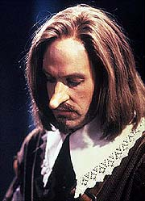
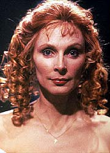
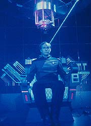
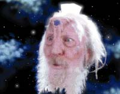

|
MANCHETE
DO EPISDIO
Barclay
volta com superinteligncia,
graas a uma
sonda aliengena
Episdio
anterior | Prximo
episdio
Sinopse:
Data Estelar: 44704.2.
A Enteprise enviada para o complexo Argus, um telescpio que
parou de enviar dados h dois meses, por razes desconhecidas.
Chegando l, a tripulao descobre uma sonda aliengena. Geordi
La Forge escala Reginald Barclay para ir com ele at a sonda,
usando uma nave auxiliar, a fim de descobrir mais sobre ela.
 O
aparato aliengena subitamente dispara um surto energtico que
deixa Barclay inconsciente. Ele e La Forge so imediatamente
transportados enfermaria. Enquanto isso, a sonda comea a
perseguir a Enterprise, emitindo perigosos nveis de energia. Toda
e qualquer tentativa de despist-la falhou, at que Barclay
apareceu com uma soluo e a executou, destruindo a sonda.
Voltando tarefa de consertar o telescpio, Geordi estima que o
trabalho levar trs semanas. Barclay, mais uma vez surpreendendo
com sua crescente confiana e inteligncia, diz que pode concluir
a tarefa em dois dias.
O orgulho de Geordi por seu oficial comea a se tornar uma preocupao,
quando ele descobre que o tripulante j est com capacidade para
discutir teoria (e at sugerir melhoramentos) com uma simulao
hologrfica de Albert Einstein. O engenheiro-chefe insiste que o
encontro com a sonda pode ter precipitado as mudanas em Barclay, e
faz questo de lev-lo enfermaria.
Beverly Crusher descobre que o tecido cerebral de Barclay sofreu
severas mudanas, que o transformaram em um ser humano
super-inteligente. Embora toda a tripulao esteja temerosa pela
mudana de Reg, o fato de que eles precisam dele para consertar o
complexo os convence a deix-lo livre.
 Conforme
os reparos progridem, o computador da nave incapaz de trabalhar
na velocidade requerida, gerando o perigo de uma falha de um dos
reatores do telescpio, o que causaria uma exploso catastrfica.
Picard ordena retirada imediata, mas informado de que a ponte
perdeu o controle do computador.
Antes que o pnico tome conta, o computador volta a funcionar e a
tripulao descobre que o telescpio estava a salvo. Quando
Picard pede ao computador uma anlise de como o desastre foi
evitado, ele se choca ao descobrir que a resposta tem a voz de
Barclay.
O tenente explica que, como o computador era muito lento, ele
conectou seu crebro mquina para salvar o complexo. Picard
exige que o engenheiro se desconecte, mas Barclay responde que isso
causaria sua morte. Enquanto a tripulao tenta criar um plano
para recuperar o controle da nave, Barclay e propele para um ponto a
30 mil anos-luz de sua posio anterior.
Antes que a tripulao possa impedi-lo, um aliengena subitamente
aparece na ponte, dizendo que a sonda transformou Barclay de modo
que ele pudesse trazer a nave at ali. O aliengena segue
explicando que esse era o mtodo de sua civilizao para
pesquisar novas raas. Enquanto eles falam, Barclay chega so e
salvo ponte, graas ajuda dos aliengenas.
Comentrios:
Quando vimos "Hollow
Pursuits", da temporada passada, ficou a certeza de que ele
voltaria. E os produtores no deixaram passar a oportunidade: o
atrapalhado e introvertido Reginald Barclay est de volta, e em
nova verso, com direito a interpretao de Cyrano
de Bergerac!
"The Nth Degree" tinha tudo para ser mais um
daqueles episdios que so totalmente orientados para o enredo e
que praticamente ignoram o desenvolvimento dos personagens. Graas
incluso de Reg, o tenente ganha os holofotes, mudando a
natureza da histria. E ele leva consigo toda a tripulao, da
dra. Crusher conselheira Troi.
 Descobrimos,
por exemplo, um dos hobbies da mdica da Enterprise: o teatro.
Percebemos tambm o interesse e a preocupao de Troi para com
Barclay. Alguns toques sutis, como o incmodo de Riker em no
saber se Troi aceitou a "cantada" de Reg, ou ainda a
chateao de Geordi ao se ver totalmente excludo do comando em
sua prpria engenharia do sabor a esta histria, que em termos
de fico cientfica j bastante atraente.
A atuao de Dwight Schultz d vida a seu personagem. Ele um
pouco "over" s vezes, arregalando os olhos e falando
depressa demais, mas sua interpretao funciona para apontar
exatamente o que est errado com ele.
Algumas cenas so verdadeiramente especiais. O momento em que La
Forge entra no tubo Jefferies com o intuito de reduzir o controle de
Barclay sobre a nave e conversa com o condensado "Barclay-computador"
lembra muito a sequncia clssica de "2001: Uma Odissia no
Espao", no momento em que o astronauta David Bowman decide
desligar o computador amalucado HAL 9000. Clssico.
Tambm bem legal a sequncia de Barclay no holodeck, discutindo
teorias de unificao com ningum menos que Albert Einstein
--mais ainda, dando um banho de clculo em um dos maiores gnios
da humanidade!
Quando o episdio vai avanando e descobrimos que o tenente no
mais poder se desligar do computador, s nos resta pensar que ou
a ltima aventura de Barclay a bordo da Enterprise ou os
roteiristas vo achar uma forma pouco convincente e muito
conveniente de salv-lo. Surpreendemente, no o que acontece.
A concluso d um sentido perfeito histria, esclarecendo o
mistrio que a iniciou (a presena e o propsito da sonda
desconhecida) e dando uma explicao eficiente para a desconexo
de Barclay do computador, sem resultar em sua prpria morte.
 A
nica ressalva a presena do Cytheriano na ponte da Enterprise.
O sujeito parece um bobo alegre, s acenando com a cabea. At
entendo a inteno dos produtores, mas eles deviam saber que no
preciso agir como um idiota para parecer aliengena.
Embora seja mais um daqueles episdios "mamo-com-acar",
ele vale pela cativante presena de Barclay, pelos sensos de
explorao pioneira e de busca pelo desconhecido que do sabor
especial s viagens de Jornada nas Estrelas e pelas bonitas
tomadas da Enterprise no espao, incluindo a sequncia em que ela
arremessada a 30 mil anos-luz de onde estava. Ah, se a Voyager
tivesse essa tecnologia...
Citaes:
La Forge - "What's
he done? I mean, we're talking about locking a man up for being too
smart."
("O que ele fez? Quero dizer, estamos falando em prender um
homem por ele ser muito esperto.")
Picard - "Has mr. Barclay done anything that could be
considered... potentially threatening?"
("O sr. Barclay fez algo que pudesse ser considerado... ameaador?")
Troi - "Well, he did make a pass at me last night... a good
one!"
("Bem, ele me passou uma cantada ontem noite... uma das
boas!")
Trivia:
 Aps "Hollow Pursuits",
os produtores estavam atrs de uma forma de trazer de volta srie
um dos personagens recorrentes mais queridos do pblico, Reginald
Barclay, interpretado por Dwight Schultz. Quando Joe Menosky surgiu
com um roteiro que abordava um ser humano superinteligente,
rapidamente ele foi reescrito para que Barclay reaparecesse na Nova
Gerao.
Aps "Hollow Pursuits",
os produtores estavam atrs de uma forma de trazer de volta srie
um dos personagens recorrentes mais queridos do pblico, Reginald
Barclay, interpretado por Dwight Schultz. Quando Joe Menosky surgiu
com um roteiro que abordava um ser humano superinteligente,
rapidamente ele foi reescrito para que Barclay reaparecesse na Nova
Gerao.
Aps
este episdio, Barclay retornar apenas no episdio "Realm
of Fear", do sexto ano.
A
nave auxiliar de La Forge e Barclay mostrada neste episdio tem o
nome de "Feynman", em homenagem ao fsico Richard P.
Feynman, ganhador do prmio Nobel em 1965.
Aps
mostrar que tem afinidades com dana ("Data's
Day"), desta vez a dra. Crusher nos mostra sua
afinidade com teatro, na sequncia "Cyrano de Bergerac"
do episdio. Essas demostraes de que a dra. Crusher tem hobbies
e talentos foram idia da prpria Gates McFadden, prontamente
aprovada pelos produtores.
Jim
Norton, que aqui interpreta "Einstein", volta a
interpretar o fsico em "Descent, Part I".
Robert
Legato, que dirigiu este episdio, foi o diretor de apenas dois
episdios da Nova Gerao. Seu outro trabalho foi em "Mnage
Troi".
Ficha
tcnica:
Escrito por Joe Menosky
Direo de Robert Legato
Exibido em 01/04/1991
Produo: 093
Elenco:
Patrick Stewart como
Jean-Luc Picard
Jonathan Frakes como William Thomas Riker
Brent Spiner como Data
LeVar Burton como Geordi La Forge
Michael Dorn como Worf
Gates McFadden como Beverly Crusher
Marina Sirtis como Deanna Troi
Elenco convidado:
Dwight Schultz
como tenente-jnior Reginald Barclay
Jim Norton como Einstein
Kay E. Kuter como Cytheriano
Saxon Trainor como tenente Linda Larson
Page Leong como alferes April Anaya
David Coburn como alferes Brower
Episdio
anterior | Prximo
episdio
|